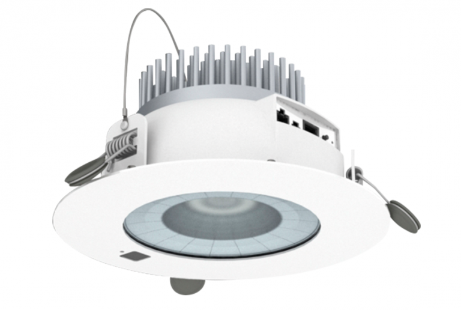

Your products powered by LiFi
As the world-leading LiFi technology provider, LightNet can support your company to design LiFi into your next lighting fixture, wearable tech, connected or mobile device.
Integrated Luminare
Mobile Phone Case

Imagine a world where every one of the billions of light bulbs in use today is a wireless hotspot delivering connectivity at speeds that can only be dreamed of with Wi-Fi.
LiFi technology for “Light Fidelity” is a new method to connect wirelessly mobile devices and other connected devices using LED lights.
LightNet used a Li-Fi-enabled lightbulb to transmit data at speeds as fast as 50 megabits per second (Mbps), which is about 10 times faster than current Wi-Fi technology. Laboratory tests have shown theoretical speeds of 224 Gigabit per second (Gbps), meaning a high-definition film could be downloaded within seconds.
The progressive replacement of the 14 billion light points in the world by LEDs makes LiFi a strong candidate to become the 3rd generation communication network (after the wired network and the radio network) and potentially the densest.
The technology has become an international standard for wireless communication in its first version in November 2011 by the International Telecommunications Standardisation Committee.
Li-Fi is a Visible Light Communications (VLC) system for data transmission. A simple VLC system has two qualifying components: 1) at least one device with a photodiode able to receive light signals and 2) a light source equipped with a signal processing unit.
A VLC light source could comprise of a fluorescent or light emitting diode (LED) bulb. Since a robust Li-Fi system requires extremely high rates of light output, LED bulbs are most ideal for implementing Li-Fi. LED is a semiconductor light source, which implies that LED light bulbs can amplify light intensity and switch rapidly. Therefore, LED cells can modulate thousands of signals without the human eye ever noticing. In turn, the changes in light intensity from the LED light source are interpreted and converted as electrical current by the receiving photodiode device. Once the electronic signal is demodulated, it is converted into a continuous stream of binary data comprising of audio, video, web, and application information to be consumed by any Internet-enabled device.
| Feature | LiFi | WiFi |
|---|---|---|
| Full form | Light Fidelity | Wireless Fidelity |
| Operation | LiFi transmits data using light with the help of LED bulbs | WiFi transmits data using radio waves with the help of WiFi router |
| Interference | Do not have any interference issues similar to radio frequency waves | Will have interference issues from nearby access points(routers) |
| Technology | Present IrDA compliant devices | WLAN 802.11a/b/g/n/ac/ad standard compliant devices |
| Data Transfer Speed | About 1Gbps | WLAN-11n offers 150Mbps, About 1-2 Gbps can be achieved using WiGig/Giga-IR |
| Frequency of operation | 10 thousand times frequency spectrum of the radio | 2.4GHz, 4.9GHz and 5GHz |
| Privacy | In LiFi, light is blocked by the walls and hence will provide more secure data | In WiFi, RF signals cannot be blocked by the walls and hence need to employ techniques to achieve secure data transfer |
| Coverage distance | About 10 meters | About 32 meters(WLAN 802.11b/11g) |
| Data density | Works in high density environments | Works in less density environments due to interference related issues |
| System components | Lamp driver, LED buld(lamp) and photo detector will make complete LiFi system | Requires routers to be installed, subscriber devices(Laptops,PDAs,Desktops) are reffered as stations |
As the world-leading LiFi technology provider, LightNet can support your company to design LiFi into your next lighting fixture, wearable tech, connected or mobile device.